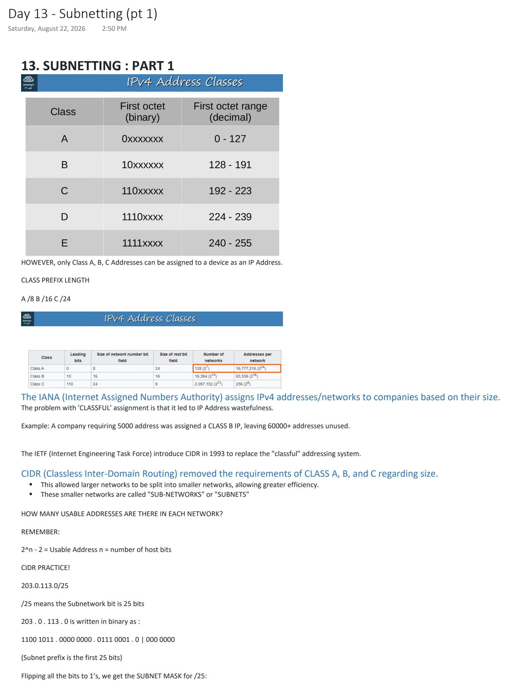
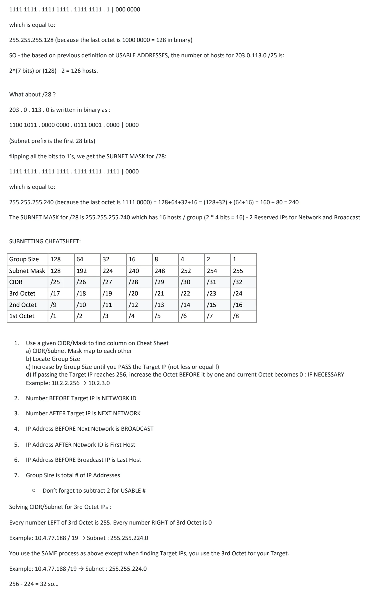
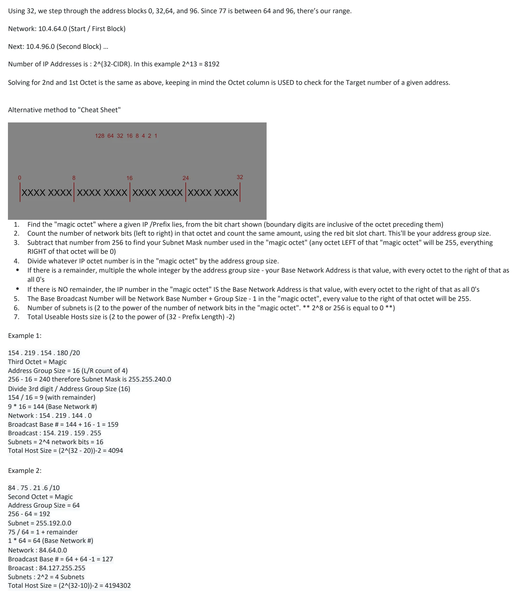

Subnetting (pt 1)
Download original PDF


Text view — Subnetting (pt 1)
Extracted from the original export. Diagrams and some formatting appear in the notes above.
Day 13 - Subnetting (pt 1) Saturday, August 22, 2026 2:50 PM 13. SUBNETTING : PART 1 HOWEVER, only Class A, B, C Addresses can be assigned to a device as an IP Address. CLASS PREFIX LENGTH A /8 B /16 C /24 The IANA (Internet Assigned Numbers Authority) assigns IPv4 addresses/networks to companies based on their size. The problem with 'CLASSFUL' assignment is that it led to IP Address wastefulness. Example: A company requiring 5000 address was assigned a CLASS B IP, leaving 60000+ addresses unused. The IETF (Internet Engineering Task Force) introduce CIDR in 1993 to replace the "classful" addressing system. CIDR (Classless Inter-Domain Routing) removed the requirements of CLASS A, B, and C regarding size. • This allowed larger networks to be split into smaller networks, allowing greater efficiency. • These smaller networks are called "SUB-NETWORKS" or "SUBNETS" HOW MANY USABLE ADDRESSES ARE THERE IN EACH NETWORK? REMEMBER: 2^n - 2 = Usable Address n = number of host bits CIDR PRACTICE! 203.0.113.0/25 /25 means the Subnetwork bit is 25 bits 203 . 0 . 113 . 0 is written in binary as : 1100 1011 . 0000 0000 . 0111 0001 . 0 | 000 0000 (Subnet prefix is the first 25 bits) Flipping all the bits to 1’s, we get the SUBNET MASK for /25: 1111 1111 . 1111 1111 . 1111 1111 . 1 | 000 0000 which is equal to: 255.255.255.128 (because the last octet is 1000 0000 = 128 in binary) SO - the based on previous definition of USABLE ADDRESSES, the number of hosts for 203.0.113.0 /25 is: 2^(7 bits) or (128) - 2 = 126 hosts. What about /28 ? 203 . 0 . 113 . 0 is written in binary as : 1100 1011 . 0000 0000 . 0111 0001 . 0000 | 0000 (Subnet prefix is the first 28 bits) flipping all the bits to 1’s, we get the SUBNET MASK for /28: 1111 1111 . 1111 1111 . 1111 1111 . 1111 | 0000 which is equal to: 255.255.255.240 (because the last octet is 1111 0000) = 128+64+32+16 = (128+32) + (64+16) = 160 + 80 = 240 The SUBNET MASK for /28 is 255.255.255.240 which has 16 hosts / group (2 * 4 bits = 16) - 2 Reserved IPs for Network and Broadcast SUBNETTING CHEATSHEET: Group Size 128 64 32 16 8 4 2 1 Subnet Mask 128 192 224 240 248 252 254 255 CIDR /25 /26 /27 /28 /29 /30 /31 /32 3rd Octet /17 /18 /19 /20 /21 /22 /23 /24 2nd Octet /9 /10 /11 /12 /13 /14 /15 /16 1st Octet /1 /2 /3 /4 /5 /6 /7 /8 1. Use a given CIDR/Mask to find column on Cheat Sheet a) CIDR/Subnet Mask map to each other b) Locate Group Size c) Increase by Group Size until you PASS the Target IP (not less or equal !) d) If passing the Target IP reaches 256, increase the Octet BEFORE it by one and current Octet becomes 0 : IF NECESSARY Example: 10.2.2.256 → 10.2.3.0 2. Number BEFORE Target IP is NETWORK ID 3. Number AFTER Target IP is NEXT NETWORK 4. IP Address BEFORE Next Network is BROADCAST 5. IP Address AFTER Network ID is First Host 6. IP Address BEFORE Broadcast IP is Last Host 7. Group Size is total # of IP Addresses ○ Don’t forget to subtract 2 for USABLE # Solving CIDR/Subnet for 3rd Octet IPs : Every number LEFT of 3rd Octet is 255. Every number RIGHT of 3rd Octet is 0 Example: 10.4.77.188 / 19 → Subnet : 255.255.224.0 You use the SAME process as above except when finding Target IPs, you use the 3rd Octet for your Target. Example: 10.4.77.188 /19 → Subnet : 255.255.224.0 256 - 224 = 32 so… Using 32, we step through the address blocks 0, 32,64, and 96. Since 77 is between 64 and 96, there’s our range. Network: 10.4.64.0 (Start / First Block) Next: 10.4.96.0 (Second Block) … Number of IP Addresses is : 2^(32-CIDR). In this example 2^13 = 8192 Solving for 2nd and 1st Octet is the same as above, keeping in mind the Octet column is USED to check for the Target number of a given address. Alternative method to "Cheat Sheet" 1. Find the "magic octet" where a given IP /Prefix lies, from the bit chart shown (boundary digits are inclusive of the octet preceding them) 2. Count the number of network bits (left to right) in that octet and count the same amount, using the red bit slot chart. This'll be your address group size. 3. Subtract that number from 256 to find your Subnet Mask number used in the "magic octet" (any octet LEFT of that "magic octet" will be 255, everything RIGHT of that octet will be 0) 4. Divide whatever IP octet number is in the "magic octet" by the address group size. • If there is a remainder, multiple the whole integer by the address group size - your Base Network Address is that value, with every octet to the right of that as all 0's • If there is NO remainder, the IP number in the "magic octet" IS the Base Network Address is that value, with every octet to the right of that as all 0's 5. The Base Broadcast Number will be Network Base Number + Group Size - 1 in the "magic octet", every value to the right of that octet will be 255. 6. Number of subnets is (2 to the power of the number of network bits in the "magic octet". ** 2^8 or 256 is equal to 0 **) 7. Total Useable Hosts size is (2 to the power of (32 - Prefix Length) -2) Example 1: 154 . 219 . 154 . 180 /20 Third Octet = Magic Address Group Size = 16 (L/R count of 4) 256 - 16 = 240 therefore Subnet Mask is 255.255.240.0 Divide 3rd digit / Address Group Size (16) 154 / 16 = 9 (with remainder) 9 * 16 = 144 (Base Network #) Network : 154 . 219 . 144 . 0 Broadcast Base # = 144 + 16 - 1 = 159 Broadcast : 154. 219 . 159 . 255 Subnets = 2^4 network bits = 16 Total Host Size = (2^(32 - 20))-2 = 4094 Example 2: 84 . 75 . 21 .6 /10 Second Octet = Magic Address Group Size = 64 256 - 64 = 192 Subnet = 255.192.0.0 75 / 64 = 1 + remainder 1 * 64 = 64 (Base Network #) Network : 84.64.0.0 Broadcast Base # = 64 + 64 -1 = 127 Broacast : 84.127.255.255 Subnets : 2^2 = 4 Subnets Total Host Size = (2^(32-10))-2 = 4194302 Day 13 - Subnetting (pt 1) Saturday, August 22, 2026 2:50 PM 13. SUBNETTING : PART 1 HOWEVER, only Class A, B, C Addresses can be assigned to a device as an IP Address. CLASS PREFIX LENGTH A /8 B /16 C /24 The IANA (Internet Assigned Numbers Authority) assigns IPv4 addresses/networks to companies based on their size. The problem with 'CLASSFUL' assignment is that it led to IP Address wastefulness. Example: A company requiring 5000 address was assigned a CLASS B IP, leaving 60000+ addresses unused. The IETF (Internet Engineering Task Force) introduce CIDR in 1993 to replace the "classful" addressing system. CIDR (Classless Inter-Domain Routing) removed the requirements of CLASS A, B, and C regarding size. • This allowed larger networks to be split into smaller networks, allowing greater efficiency. • These smaller networks are called "SUB-NETWORKS" or "SUBNETS" HOW MANY USABLE ADDRESSES ARE THERE IN EACH NETWORK? REMEMBER: 2^n - 2 = Usable Address n = number of host bits CIDR PRACTICE! 203.0.113.0/25 /25 means the Subnetwork bit is 25 bits 203 . 0 . 113 . 0 is written in binary as : 1100 1011 . 0000 0000 . 0111 0001 . 0 | 000 0000 (Subnet prefix is the first 25 bits) Flipping all the bits to 1’s, we get the SUBNET MASK for /25: 1111 1111 . 1111 1111 . 1111 1111 . 1 | 000 0000 which is equal to: 255.255.255.128 (because the last octet is 1000 0000 = 128 in binary) SO - the based on previous definition of USABLE ADDRESSES, the number of hosts for 203.0.113.0 /25 is: 2^(7 bits) or (128) - 2 = 126 hosts. What about /28 ? 203 . 0 . 113 . 0 is written in binary as : 1100 1011 . 0000 0000 . 0111 0001 . 0000 | 0000 (Subnet prefix is the first 28 bits) flipping all the bits to 1’s, we get the SUBNET MASK for /28: 1111 1111 . 1111 1111 . 1111 1111 . 1111 | 0000 which is equal to: 255.255.255.240 (because the last octet is 1111 0000) = 128+64+32+16 = (128+32) + (64+16) = 160 + 80 = 240 The SUBNET MASK for /28 is 255.255.255.240 which has 16 hosts / group (2 * 4 bits = 16) - 2 Reserved IPs for Network and Broadcast SUBNETTING CHEATSHEET: Group Size 128 64 32 16 8 4 2 1 Subnet Mask 128 192 224 240 248 252 254 255 CIDR /25 /26 /27 /28 /29 /30 /31 /32 3rd Octet /17 /18 /19 /20 /21 /22 /23 /24 2nd Octet /9 /10 /11 /12 /13 /14 /15 /16 1st Octet /1 /2 /3 /4 /5 /6 /7 /8 1. Use a given CIDR/Mask to find column on Cheat Sheet a) CIDR/Subnet Mask map to each other b) Locate Group Size c) Increase by Group Size until you PASS the Target IP (not less or equal !) d) If passing the Target IP reaches 256, increase the Octet BEFORE it by one and current Octet becomes 0 : IF NECESSARY Example: 10.2.2.256 → 10.2.3.0 2. Number BEFORE Target IP is NETWORK ID 3. Number AFTER Target IP is NEXT NETWORK 4. IP Address BEFORE Next Network is BROADCAST 5. IP Address AFTER Network ID is First Host 6. IP Address BEFORE Broadcast IP is Last Host 7. Group Size is total # of IP Addresses ○ Don’t forget to subtract 2 for USABLE # Solving CIDR/Subnet for 3rd Octet IPs : Every number LEFT of 3rd Octet is 255. Every number RIGHT of 3rd Octet is 0 Example: 10.4.77.188 / 19 → Subnet : 255.255.224.0 You use the SAME process as above except when finding Target IPs, you use the 3rd Octet for your Target. Example: 10.4.77.188 /19 → Subnet : 255.255.224.0 256 - 224 = 32 so… Using 32, we step through the address blocks 0, 32,64, and 96. Since 77 is between 64 and 96, there’s our range. Network: 10.4.64.0 (Start / First Block) Next: 10.4.96.0 (Second Block) … Number of IP Addresses is : 2^(32-CIDR). In this example 2^13 = 8192 Solving for 2nd and 1st Octet is the same as above, keeping in mind the Octet column is USED to check for the Target number of a given address. Alternative method to "Cheat Sheet" 1. Find the "magic octet" where a given IP /Prefix lies, from the bit chart shown (boundary digits are inclusive of the octet preceding them) 2. Count the number of network bits (left to right) in that octet and count the same amount, using the red bit slot chart. This'll be your address group size. 3. Subtract that number from 256 to find your Subnet Mask number used in the "magic octet" (any octet LEFT of that "magic octet" will be 255, everything RIGHT of that octet will be 0) 4. Divide whatever IP octet number is in the "magic octet" by the address group size. • If there is a remainder, multiple the whole integer by the address group size - your Base Network Address is that value, with every octet to the right of that as all 0's • If there is NO remainder, the IP number in the "magic octet" IS the Base Network Address is that value, with every octet to the right of that as all 0's 5. The Base Broadcast Number will be Network Base Number + Group Size - 1 in the "magic octet", every value to the right of that octet will be 255. 6. Number of subnets is (2 to the power of the number of network bits in the "magic octet". ** 2^8 or 256 is equal to 0 **) 7. Total Useable Hosts size is (2 to the power of (32 - Prefix Length) -2) Example 1: 154 . 219 . 154 . 180 /20 Third Octet = Magic Address Group Size = 16 (L/R count of 4) 256 - 16 = 240 therefore Subnet Mask is 255.255.240.0 Divide 3rd digit / Address Group Size (16) 154 / 16 = 9 (with remainder) 9 * 16 = 144 (Base Network #) Network : 154 . 219 . 144 . 0 Broadcast Base # = 144 + 16 - 1 = 159 Broadcast : 154. 219 . 159 . 255 Subnets = 2^4 network bits = 16 Total Host Size = (2^(32 - 20))-2 = 4094 Example 2: 84 . 75 . 21 .6 /10 Second Octet = Magic Address Group Size = 64 256 - 64 = 192 Subnet = 255.192.0.0 75 / 64 = 1 + remainder 1 * 64 = 64 (Base Network #) Network : 84.64.0.0 Broadcast Base # = 64 + 64 -1 = 127 Broacast : 84.127.255.255 Subnets : 2^2 = 4 Subnets Total Host Size = (2^(32-10))-2 = 4194302 Day 13 - Subnetting (pt 1) Saturday, August 22, 2026 2:50 PM 13. SUBNETTING : PART 1 HOWEVER, only Class A, B, C Addresses can be assigned to a device as an IP Address. CLASS PREFIX LENGTH A /8 B /16 C /24 The IANA (Internet Assigned Numbers Authority) assigns IPv4 addresses/networks to companies based on their size. The problem with 'CLASSFUL' assignment is that it led to IP Address wastefulness. Example: A company requiring 5000 address was assigned a CLASS B IP, leaving 60000+ addresses unused. The IETF (Internet Engineering Task Force) introduce CIDR in 1993 to replace the "classful" addressing system. CIDR (Classless Inter-Domain Routing) removed the requirements of CLASS A, B, and C regarding size. • This allowed larger networks to be split into smaller networks, allowing greater efficiency. • These smaller networks are called "SUB-NETWORKS" or "SUBNETS" HOW MANY USABLE ADDRESSES ARE THERE IN EACH NETWORK? REMEMBER: 2^n - 2 = Usable Address n = number of host bits CIDR PRACTICE! 203.0.113.0/25 /25 means the Subnetwork bit is 25 bits 203 . 0 . 113 . 0 is written in binary as : 1100 1011 . 0000 0000 . 0111 0001 . 0 | 000 0000 (Subnet prefix is the first 25 bits) Flipping all the bits to 1’s, we get the SUBNET MASK for /25: 1111 1111 . 1111 1111 . 1111 1111 . 1 | 000 0000 which is equal to: 255.255.255.128 (because the last octet is 1000 0000 = 128 in binary) SO - the based on previous definition of USABLE ADDRESSES, the number of hosts for 203.0.113.0 /25 is: 2^(7 bits) or (128) - 2 = 126 hosts. What about /28 ? 203 . 0 . 113 . 0 is written in binary as : 1100 1011 . 0000 0000 . 0111 0001 . 0000 | 0000 (Subnet prefix is the first 28 bits) flipping all the bits to 1’s, we get the SUBNET MASK for /28: 1111 1111 . 1111 1111 . 1111 1111 . 1111 | 0000 which is equal to: 255.255.255.240 (because the last octet is 1111 0000) = 128+64+32+16 = (128+32) + (64+16) = 160 + 80 = 240 The SUBNET MASK for /28 is 255.255.255.240 which has 16 hosts / group (2 * 4 bits = 16) - 2 Reserved IPs for Network and Broadcast SUBNETTING CHEATSHEET: Group Size 128 64 32 16 8 4 2 1 Subnet Mask 128 192 224 240 248 252 254 255 CIDR /25 /26 /27 /28 /29 /30 /31 /32 3rd Octet /17 /18 /19 /20 /21 /22 /23 /24 2nd Octet /9 /10 /11 /12 /13 /14 /15 /16 1st Octet /1 /2 /3 /4 /5 /6 /7 /8 1. Use a given CIDR/Mask to find column on Cheat Sheet a) CIDR/Subnet Mask map to each other b) Locate Group Size c) Increase by Group Size until you PASS the Target IP (not less or equal !) d) If passing the Target IP reaches 256, increase the Octet BEFORE it by one and current Octet becomes 0 : IF NECESSARY Example: 10.2.2.256 → 10.2.3.0 2. Number BEFORE Target IP is NETWORK ID 3. Number AFTER Target IP is NEXT NETWORK 4. IP Address BEFORE Next Network is BROADCAST 5. IP Address AFTER Network ID is First Host 6. IP Address BEFORE Broadcast IP is Last Host 7. Group Size is total # of IP Addresses ○ Don’t forget to subtract 2 for USABLE # Solving CIDR/Subnet for 3rd Octet IPs : Every number LEFT of 3rd Octet is 255. Every number RIGHT of 3rd Octet is 0 Example: 10.4.77.188 / 19 → Subnet : 255.255.224.0 You use the SAME process as above except when finding Target IPs, you use the 3rd Octet for your Target. Example: 10.4.77.188 /19 → Subnet : 255.255.224.0 256 - 224 = 32 so… Using 32, we step through the address blocks 0, 32,64, and 96. Since 77 is between 64 and 96, there’s our range. Network: 10.4.64.0 (Start / First Block) Next: 10.4.96.0 (Second Block) … Number of IP Addresses is : 2^(32-CIDR). In this example 2^13 = 8192 Solving for 2nd and 1st Octet is the same as above, keeping in mind the Octet column is USED to check for the Target number of a given address. Alternative method to "Cheat Sheet" 1. Find the "magic octet" where a given IP /Prefix lies, from the bit chart shown (boundary digits are inclusive of the octet preceding them) 2. Count the number of network bits (left to right) in that octet and count the same amount, using the red bit slot chart. This'll be your address group size. 3. Subtract that number from 256 to find your Subnet Mask number used in the "magic octet" (any octet LEFT of that "magic octet" will be 255, everything RIGHT of that octet will be 0) 4. Divide whatever IP octet number is in the "magic octet" by the address group size. • If there is a remainder, multiple the whole integer by the address group size - your Base Network Address is that value, with every octet to the right of that as all 0's • If there is NO remainder, the IP number in the "magic octet" IS the Base Network Address is that value, with every octet to the right of that as all 0's 5. The Base Broadcast Number will be Network Base Number + Group Size - 1 in the "magic octet", every value to the right of that octet will be 255. 6. Number of subnets is (2 to the power of the number of network bits in the "magic octet". ** 2^8 or 256 is equal to 0 **) 7. Total Useable Hosts size is (2 to the power of (32 - Prefix Length) -2) Example 1: 154 . 219 . 154 . 180 /20 Third Octet = Magic Address Group Size = 16 (L/R count of 4) 256 - 16 = 240 therefore Subnet Mask is 255.255.240.0 Divide 3rd digit / Address Group Size (16) 154 / 16 = 9 (with remainder) 9 * 16 = 144 (Base Network #) Network : 154 . 219 . 144 . 0 Broadcast Base # = 144 + 16 - 1 = 159 Broadcast : 154. 219 . 159 . 255 Subnets = 2^4 network bits = 16 Total Host Size = (2^(32 - 20))-2 = 4094 Example 2: 84 . 75 . 21 .6 /10 Second Octet = Magic Address Group Size = 64 256 - 64 = 192 Subnet = 255.192.0.0 75 / 64 = 1 + remainder 1 * 64 = 64 (Base Network #) Network : 84.64.0.0 Broadcast Base # = 64 + 64 -1 = 127 Broacast : 84.127.255.255 Subnets : 2^2 = 4 Subnets Total Host Size = (2^(32-10))-2 = 4194302